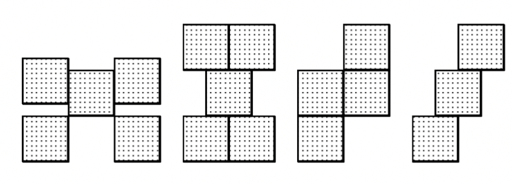
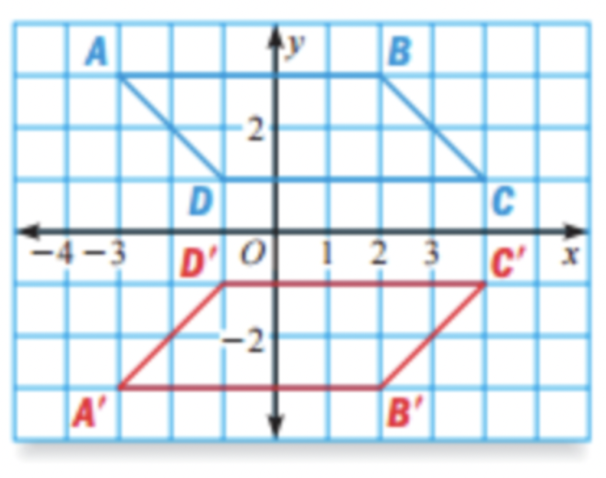
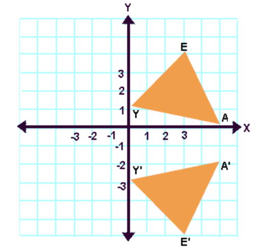
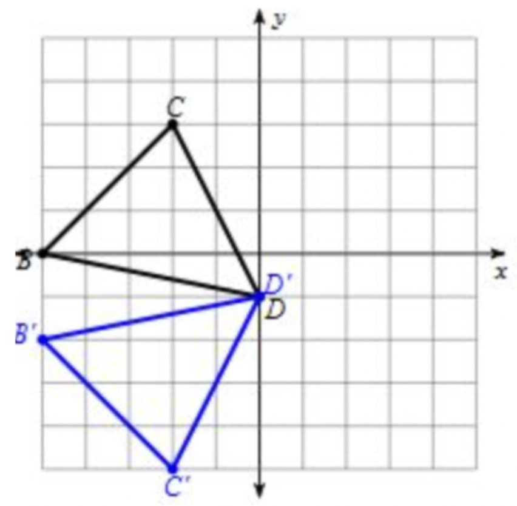
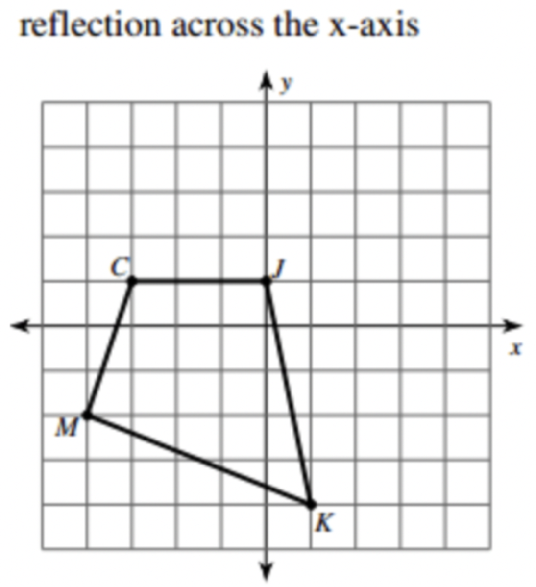

1. Reflect the point (2, -4) over the y-axis. Write your answer as a coordinate.
2. The point (-2, 5) is reflected over the line x = 1. Write your answer as a coordinate.
3. True or False: Reflections cause 2 changes to occur: location and orientation.
4. How many lines of symmetry does this tessellation have?

5. Which design has exactly one line of symmetry?
6. State the number of lines of symmetry in this tessellation.
7. State the line of reflection for the given shape.
8. Flipping a figure is a ...
9. Is the picture being reflected in the y-axis or x-axis?

10. What is the rule for the following reflection?
11. What is the rule for the following reflection?

12. What is the rule for the following reflection?

13. Find K' if the figure is reflected across the x-axis.
